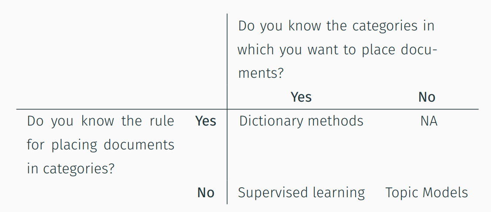
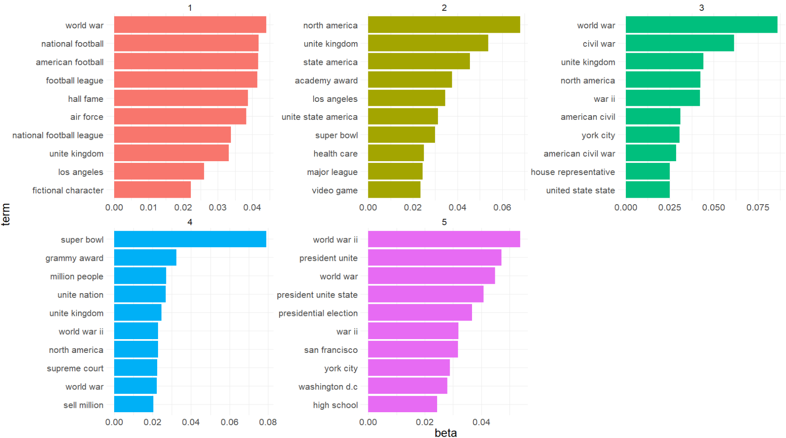

I have discussed the basics of text analytics and the pre-processing for text data in the previous post.
Therefore, in this post, I will explore topic modeling, i.e. one of the techniques under text analytics.

Photo by Prateek Katyal on Unsplash
Categorizing documents
Categorizing documents is one of the commonly used techniques in text analytics.
(Blumenau 2021) summarizes the suitable technique to categorize the documents depending on the situation.
In general, the two considerations of which methods are appropriate to be used to categorize the documents are as follows:
Are the categories of the documents known?
Do we know the rules of categorizing the documents?

However, the categories within the documents may not be so straightforward some of the time. For example, how granular should we split the actuarial topics within the documents? Should I split by the broader topics within the documents? How do we define the broader topic?
This is where the topic modeling technique becomes very handy.
What is topic modeling?
Topic modeling is a statistical method for identifying words in a corpus of documents that tend to co-occur together and as a result, share some sort of semantic relationship (Jockers and Thalken 2020).
In other words, topic modeling can also be thought of as an exercise to perform clustering on the documents based on the keywords in the documents.
Application of topic modeling
In a report by Milliman (Pouget et al. 2021), the authors provided a use case on how topic modeling could help in claim management. In the use case, the author mentioned that the topic modeling technique can be used to categorize the emails into different topics. This could greatly reduce the number of variables for the classification tasks.
Apart from that, the following are the other possible applications of topic modeling (Valput 2020):
Text summarization
Query expansion
Sentiment analysis
Recommender systems
Next, we will look at how to perform topic modeling.
Methods to perform topic modeling
(Sarkar 2016) There are three methods in extracting the topics from the text data:
Latent Semantic Indexing (LSA)
Latent Dirichlet Allocation (LDA)
Non-negative Matrix Factorization (NNMF)
Over here, I will be using the second method, where it is one of the popular methods to perform topic modeling.
Latent Dirichlet Allocation (LDA)
After reading through a few different materials, personally, I think is below explanation is easier to understand.
(Bansal 2016) LDA assumes documents are produced from a mixture of topics. Those topics then generate words based on their probability distribution. Given a dataset of documents, LDA backtracks and tries to figure out what topics would create those documents in the first place.

This method is quite similar to LSA. The main difference between LSA and LDA is that LDA assumes that the distribution of topics in a document and the distribution of words in topics are Dirichlet distributions (Pascual 2019).
What is Dirichlet distribution?
The Dirichlet distribution Dir(α) is a family of continuous multivariate probability distributions parameterized by a vector α of positive reals (Liu 2019). It is a multivariate generalization of the Beta distribution. Dirichlet distributions are commonly used as prior distributions in Bayesian statistics.
The author also provided the explanation of using Dirichlet distribution used as a prior distribution in Bayesian statistics, i.e. this distribution is the conjugate before the categorical distribution and multinomial distribution, and making it the prior would simplify the maths.
R package
Just to recap how the different R packages work together with
tidytext package (Silge and Robinson 2021):

Screenshot from Chapter 6 of Text Mining with R book
I will be using topicmodels package and
tidytext package to perform topic modeling.
Demonstration
In this demonstration, I will be using the same dataset as the previous post. This is the link to download the dataset.
The data consists of a publicly available set of question and sentence pairs from an open domain question.

Photo by Olya Kobruseva from Pexels
Setup the environment
First, I will set up the environment by calling all the packages I need for the analysis later.
packages <- c('tidyverse', 'readr', 'skimr', 'tidytext', 'quanteda',
'ggwordcloud', 'lexicon', 'topicmodels')
for(p in packages){
if(!require (p, character.only = T)){
install.packages(p)
}
library(p, character.only = T)
}
I will also be using the pre-processing steps as previous post. I will be also using the output from lemmatization to perform topic modeling.
Hence, I will skip the pre-processing steps in this post so that this post is not too lengthy.
Document-feature matrix
To perform topic modeling, first, we will need to convert the token into the document-feature matrix (dfm).
According to the quanteda documentation
page, dfm refers to documents in rows and “features” as
columns, where we can understand the tokens as the “features” in this
context.
text_df_lemma_1 <- text_df_lemma %>%
dfm()
I will also trim away the terms that appear 10 times or less across the document since it is unlikely the terms will carry much meaning to the analysis.
text_df_lemma_1 <- text_df_lemma_1 %>%
dfm_trim(min_termfreq = 10)
Then, topfeatures function is used to extract the top 20
features from the dfm object.
topfeatures(text_df_lemma_1, 20)
state unite include american
8588 2782 1842 1416 1304
year world war time large
1132 1087 1032 927 910
film make series system city
832 767 759 755 730
form united state term country call
702 694 686 681 667 Word Cloud
Next, I will illustrate the result in word cloud format so that it’s easier to visualize how frequently the words appear in the documents relative to one another.
To do so, first I will convert the dfm object to a tidy object by
using tidy function.
text_df_lemma_1_tidy <- tidy(text_df_lemma_1)
Next, I will perform group_by to sum up the total count
of the different words in the documents.
text_df_lemma_1_tidy_count <- text_df_lemma_1_tidy %>%
group_by(term) %>%
summarise(tot_count = sum(count))
Once that is done, I will use ggplot function to
visualize the word cloud.
text_df_lemma_1_tidy_count %>%
filter(tot_count >= 500) %>%
ggplot(aes(label = term, size = tot_count, color = tot_count)) +
geom_text_wordcloud_area(shape = "square") +
scale_size_area(max_size = 500) +
theme_minimal()
From the graph, it seems like some unigram tokens may not carry much meaning. The algorithm has treated each word as a token by itself. However, sometimes we need multiple words to convey the message.
For example, if we refer to the graph, we will note “unite”, where “unite” could mean a lot of things. If we were to refer to the raw data, we will realize that “unite” is from the “united states”.
N-gram
To overcome this, instead of performing a uni-gram, I will specify 2:3 in the function so that both bi-gram and tri-gram will be generated.
text_df_lemma_3 <- text_df_lemma %>%
tokens_ngrams(n = 2:3, concatenator = " ") %>%
dfm()
topfeatures function is being used to extract the top
features from the term frequency.
topfeatures(text_df_lemma_3, 20)
unite state world war unite kingdom
1538 228 178
north america super bowl war ii
157 138 121
world war ii civil war los angeles
119 110 96
york city video game president unite
90 88 80
president unite state unite nation federal government
80 76 75
academy award television series united state state
73 72 68
metropolitan area sell million
68 66 Note that the term “unite state” appears much more frequent than the rest of the words. After some trial and error, it seems like the topic modeling result seems to be more satisfying after I drop the word “unite state”.
Hence in the dfm_trim function, I have specified I would
like to drop the term that has more than 1000 counts.
I will be dropping terms with a count of 30 or less, otherwise, the dfm will be too huge.
text_df_lemma_3 <- text_df_lemma_3 %>%
dfm_trim(min_termfreq = 30,
max_termfreq = 1000,
termfreq_type = "count")
dfm_trim function also supports other trimming methods,
eg. drop by proportion, rank and, quantile. Refer to this documentation
page for the different trimming methods.
Word Cloud
Next, I will convert the dfm object into a tidy object so that I
could use ggplot function to visualize the word cloud.
text_df_lemma_3_tidy <- tidy(text_df_lemma_3)
text_df_lemma_3_tidy_count <- text_df_lemma_3_tidy %>%
group_by(term) %>%
summarise(tot_count = sum(count))
text_df_lemma_3_tidy_count %>%
filter(tot_count >= 45) %>%
ggplot(aes(label = term, size = tot_count, color = tot_count)) +
geom_text_wordcloud_area(shape = "square") +
scale_size_area(max_size = 14) +
theme_minimal()
LDA
Once that is done, I will pass the dfm object into LDA
function. I have specified that I would like to have 5 topics in the
result. Also, I will stick with the default fitting method, which is
“VEM”.
Before that, I will perform a check to ensure there is no presence of all 0 rows within the dfm object. Otherwise, the algorithm would not work.
rowTotals <- apply(text_df_lemma_3, 1, sum)
text_df_lemma_3_new <- text_df_lemma_3[rowTotals > 0, ]
Once the check is done, I will pass the updated dfm object into the
LDA function.
df_lda_lemma_3 <- LDA(text_df_lemma_3_new,
k = 5,
control = list(seed = 0,
nstart = 1))
If we were to call the LDA object, you could see that we have fitted a LDA model with VEM fitting method. There are 5 topics within the fitted model.
df_lda_lemma_3
A LDA_VEM topic model with 5 topics.To visualize the result, I will use tidy function to
convert the object into tidy data format so that ggplot
function can be used.
This is where we can use the tidy function within
tidytext package to help us to convert the dfm object into
a tidy object. Note that I have not passed in another argument, so the
default matrix would be “beta” as shown in the result below.
df_lda_lemma_3_tidy <- tidy(df_lda_lemma_3)
df_lda_lemma_3_tidy
# A tibble: 545 x 3
topic term beta
<int> <chr> <dbl>
1 1 african american 0.0215
2 2 african american 0.00110
3 3 african american 0.00125
4 4 african american 0.00285
5 5 african american 0.00140
6 1 fictional character 0.0109
7 2 fictional character 0.0109
8 3 fictional character 0.00563
9 4 fictional character 0.00187
10 5 fictional character 0.00489
# ... with 535 more rowsRecall beta is the parameter for per-topic word distribution. The way we could understand the beta is the probability of being generated from a necessary topic.
Once the results are being converted into tidy data format, I will find the top 10 terms under each topic. I will also sort the term based on their beta values in descending order.
df_lda_lemma_3_tidy_terms <- df_lda_lemma_3_tidy %>%
group_by(topic) %>%
slice_max(beta, n = 10) %>%
ungroup() %>%
arrange(topic, -beta)
Then, I will pass the result to ggplot function to
visualize the result in the word cloud.
df_lda_lemma_3_tidy_terms %>%
mutate(term = reorder_within(term, beta, topic)) %>%
ggplot(aes(beta, term, fill = factor(topic))) +
geom_col(show.legend = FALSE) +
facet_wrap(~topic, scales = "free") +
scale_y_reordered() +
theme_minimal() +
theme(text = element_text(size = 20))

From the result, below are some of the interesting insights:
Topic 1 has some words that are related to football
There are few words related to countries or areas within topic 2, eg. united states, united kingdom and, so on
Topic 4 seems to be related to the super bowl
Topic 3 & 5 seems to be related to war since there are a few words related to wars
Although both topic 3 & 5 seem to be related to wars, topic 3 seems to be related to civil war and topic 5 relates to world war
Conclusion
That’s all for the day!
Thanks for reading the post until the end.
Feel free to contact me through email or LinkedIn if you have any suggestions on future topics to share.
Refer to this link for the blog disclaimer.
Till next time, happy learning!
Photo by Kinga Cichewicz on Unsplash